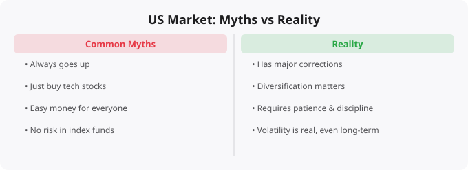

The American stock market — primarily the NYSE and Nasdaq — is the largest, most liquid, and most closely watched financial market in the world. For many Indian investors looking beyond domestic markets, it is an obvious target for international diversification. But the journey into American markets is often shaped by misconceptions that lead to poor decisions and disappointing results.
The US stock market, represented by indices like the S&P 500, has delivered impressive long-term returns — historically around 9-10% annually in dollar terms over extended periods. This performance creates a narrative that American stocks are a one-way bet. The reality is more complex. The S&P 500 fell approximately 57% from its peak during the 2008 financial crisis. It fell about 34% in March 2020. It fell about 25% in 2022. These are not minor fluctuations — these are events where a significant portion of invested capital disappears, sometimes for extended periods. For Indian investors investing in US equities, the currency risk adds another layer of complexity. When the Rupee weakens against the Dollar, your returns are amplified. When the Rupee strengthens, it erodes returns.
When people think about investing in America, they typically think about Apple, Microsoft, Amazon, Google, Nvidia, Tesla. But the American market contains over 4,000 publicly listed companies spanning every imaginable sector: energy, healthcare, financial services, consumer staples, industrials, real estate, utilities, and many others. When you invest in an S&P 500 index fund, you are investing in all of these sectors, not just tech. Over-concentration in technology names — which many retail investors end up with because they buy the companies they know — creates sector risk. When tech valuations compress (as happened sharply in 2022), a tech-heavy portfolio suffers disproportionately.
CNBC, Bloomberg, and other American financial media are sometimes informative but they are also entertainment products designed to attract and hold viewers, which means they emphasize drama, urgency, and controversy. Every market move becomes a historic moment. Every economic data point is analyzed as evidence for dramatically bullish or bearish scenarios. Pundits make confident predictions that turn out to be wrong with remarkable frequency. The language of these channels creates an impression that you need to actively monitor and respond to market events — which is exactly the kind of behavior that leads to poor long-term returns.
During bull markets, when prices rise persistently for extended periods, a dangerous belief develops: that traditional measures of value — price-to-earnings ratios, dividend yields, debt levels — do not apply anymore. History has repeatedly demonstrated that valuation matters. Not in the short term — markets can sustain high valuations for years. But over extended periods, starting valuation is one of the strongest predictors of future returns. Buying expensive assets tends to lead to lower future returns. The American market went through an extraordinary valuation expansion during 2020-2021, driven by unprecedented monetary stimulus. The correction in 2022, when interest rates rose sharply, was painful for investors who had bought at peak valuations.
Many retail investors believe that investing successfully requires picking individual winning stocks. The evidence strongly suggests that most active stock pickers — including professional fund managers with research teams, data feeds, and decades of experience — underperform simple index funds over long periods. The S&P 500 index fund is not a compromise for investors who cannot find good stocks. It is, for most investors, the superior choice on a risk-adjusted, after-fee basis. If you have a genuine edge — deep knowledge of a specific industry, the time and discipline to do thorough research, the emotional resilience to hold conviction positions through volatility — individual stock picking can be worthwhile. But for most beginners, starting with index funds while you develop knowledge and judgment is a much better approach.
The American market has created enormous wealth for patient investors over decades. It has destroyed capital for impatient ones who followed news, chased momentum, and did not understand what they owned. The path to benefiting from American markets is not complicated in theory: invest consistently in diversified instruments, understand what you own and why, maintain perspective during volatility, and think in years rather than days. Understanding the common misunderstandings is the first step toward avoiding them. The opportunity is real — but only for those who approach it with the right mental framework.
← Back to BlogFinancial education is only valuable if it changes behavior. The concepts covered here — whether about market mechanics, investment principles, or economic systems — are most useful when they become part of your decision-making framework rather than abstract knowledge that exists separately from your actions. The most important application is self-awareness: understanding why you are tempted to make certain financial decisions, recognizing when emotion is driving a choice that analysis should drive, and building systems (automatic investments, pre-committed rules for buying and selling) that protect you from your own worst instincts under pressure. Good financial decisions compound just as good investments do.
Every topic in technology and finance rewards the learner who goes beyond surface understanding to build genuine fluency. Fluency comes from repeated exposure, application in varied contexts, and reflection on what worked and what did not. The concepts discussed here are starting points — each one opens into a deeper field of study that could occupy years of focused learning. The most effective approach is not to try to master everything at once, but to pick the areas most relevant to your current goals, go deep there, and then expand. Depth in a few areas is more valuable than shallow familiarity with many. Build on what you know, stay curious about what you do not, and keep the practice of learning as a consistent daily habit rather than an occasional burst of effort.
The questions that make learning stick: How does this connect to what I already know? Where would I actually use this? What would happen if I tried to explain this to someone who knows nothing about it? What are the edge cases and exceptions? What is still unclear? Asking these questions transforms passive reading into active learning, and active learning is what builds the kind of understanding that is still accessible years later when you need it under real conditions.